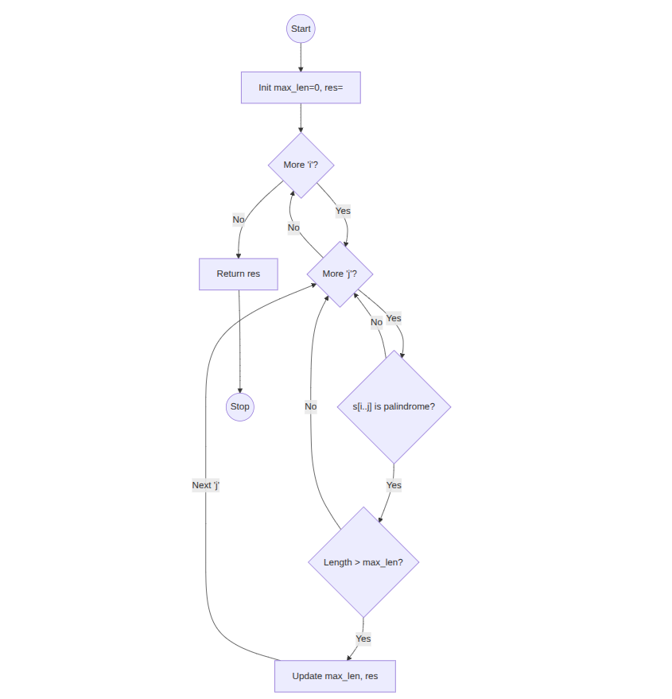
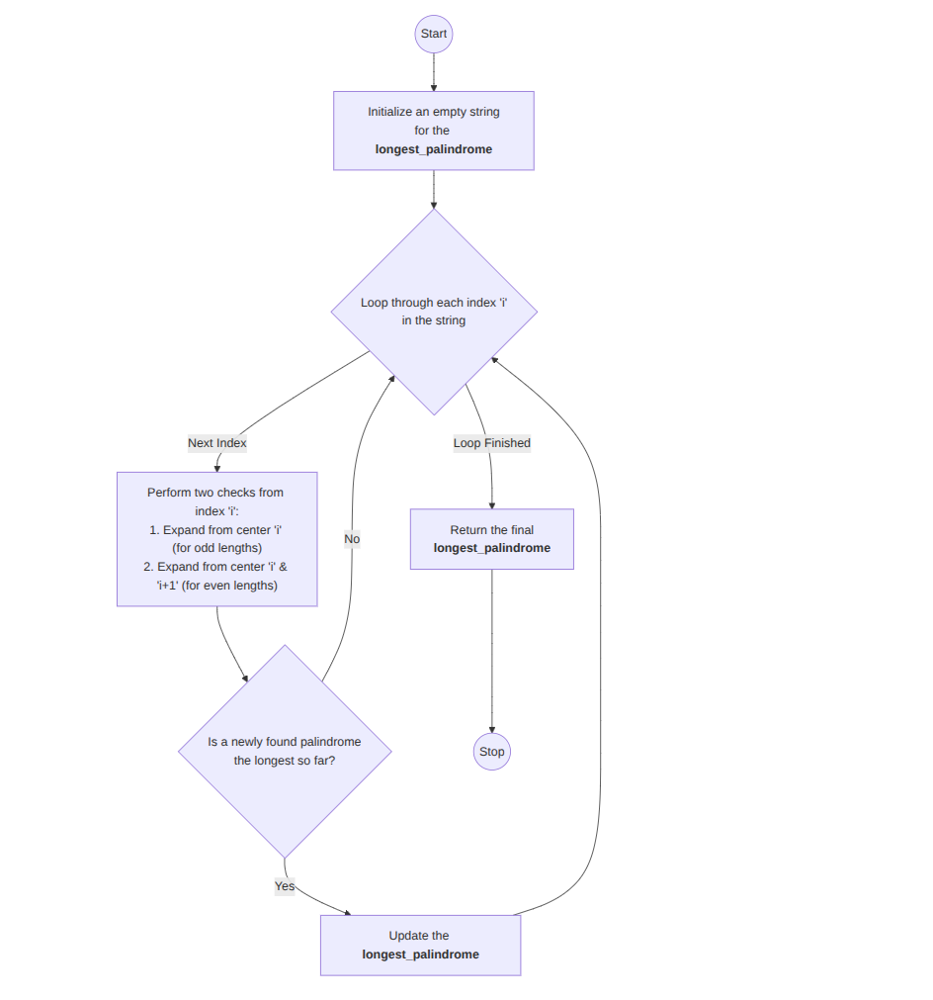
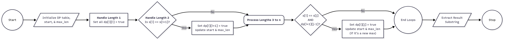

Longest Palindromic Substring
Problem Statement
Given a string s, return the longest substring of s that is a palindrome.
Example: Input: "babad" → Output: "bab" (or "aba")
Approach 1: Brute Force
Explanation: Check all possible substrings and return the longest palindrome.
Time Complexity: O(n³)
Space Complexity: O(1)
max_len = 0
res = ""
for i = 0 to n-1:
for j = i to n-1:
if substring s[i..j] is palindrome:
if length > max_len:
max_len = length
res = s[i..j]
return res

Approach 2: Expand Around Center
Explanation: Expand from each character (and between characters) to find palindromes efficiently.
Time Complexity: O(n²)
Space Complexity: O(1)
for i = 0 to n-1:
expand around center i (odd length)
expand around center i and i+1 (even length)
update max palindrome
return longest palindrome

Approach 3: Dynamic Programming
Explanation: Use DP table where dp[i][j] = true if s[i..j] is palindrome.
Time Complexity: O(n²)
Space Complexity: O(n²)
dp[n][n] = false
for i = n-1 to 0:
for j = i to n-1:
if s[i] == s[j] and (j-i < 3 or dp[i+1][j-1]):
dp[i][j] = true
update max palindrome
return longest palindrome
